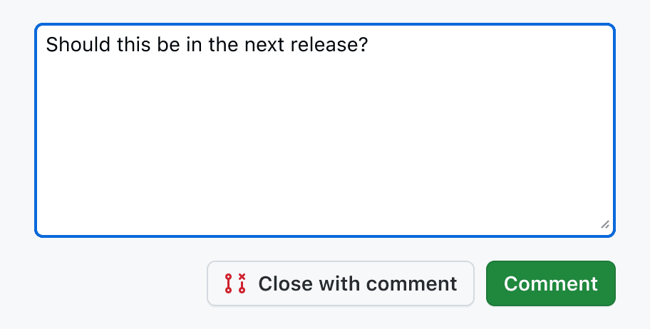

B · 종류와 저장 역할 분리
현재 원본과 같은 조건으로 비교
원본 레퍼런스와 가져온 원리

행동을 문구로 밝히고 입력 아래에 저장 동작을 둡니다.
가져온 것: 명확한 저장 문구·오른쪽 행동 묶음. 제외: GitHub 녹색·댓글 닫기·항상 활성화 전략. 빈 입력 및 저장 중 잠금은 우리 기존 동작을 유지합니다.
서로 가까운 선택지와 현재 선택을 함께 보여줍니다.
가져온 것: 인용문·챕터를 동시에 보여주는 관계. 제외: 파일 보기 기능·아이콘·스타일 전체. 선택한 설정은 기존 스위치를 두 선택지로 바꿨습니다. B·C는 계속 비교할 수 있습니다.
본문·보조 조작·주 행동을 서로 다른 위치에 묶습니다.
가져온 것: 도구와 주 행동의 구분. 제외: 서식·첨부·예약·메시지 전송 기능. 410pages의 저장 아이콘과 동작은 별도로 판단합니다.
2026-10-06 공식 원본 이미지·시연·컴포넌트 화면을 확인했습니다. 예시 관찰과 우리 서비스의 실제 사용성 검증은 구분합니다.
보존할 기능 · 이번 선택 범위 · 검증
- 현재 원본은 CitationEditor와 실제 592px 입력창을 기준으로 재구성했습니다. 종류 버튼은 44px, 페이지·저장은 32px입니다. 페이지는 모든 후보에서 기존처럼 저장 옆 오른쪽에 둡니다. 원본 복원은 기존 스위치·페이지 120px·전송 아이콘·높이를 되돌립니다.
- 인용문/챕터 전환, 챕터에서 페이지 숨김, 삽입 위치·취소, 빈 입력·저장 중 잠금, 실패 시 내용 유지, 실제 입력·페이지·키보드 저장 로직은 제품 구현에서 보존해야 합니다.
- 이번 시안의 범위는 종류 선택·하단 조작 배치·간격·크기·저장 버튼 표현입니다. 본문 입력의 글자 크기·읽기 열 들여쓰기·상위 화면·팔레트·저장 데이터·테마 전환 규칙은 디자인 선택에 포함하지 않습니다.
- 선택한 설정을 제품 코드와 Policy에 반영했습니다. 작업대에서 이후 바꾼 값은 추가 적용 승인이 필요한 미리보기입니다.
- 확인 완료: 입력 유지·키보드 종류 선택·저장 중 잠금·실패 내용 보존·수치 저장 후 재로드·원본 복원·JSON 내보내기·붙여넣기 값 검증·320px 입력창·375px 작업대에서 미리보기 가림·Night 표시. 네이티브 파일 선택기를 통한 불러오기는 자동화 응답이 없어 미검증입니다. 선택한 설정의 실제 앱 검증 결과는 적용 보고서에서 확인할 수 있습니다.
- Night 조절안의 활성 저장 버튼은 기존 팔레트의 어두운 글씨색을 사용해 대비를 확보한 제안입니다. 원본은 현재의 흰 글씨를 보존합니다.